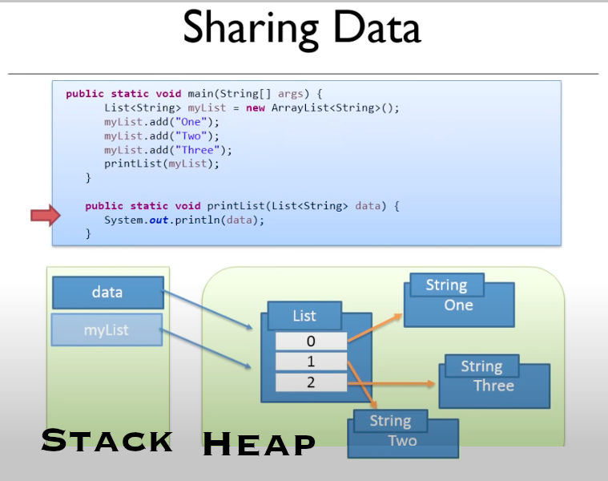

Week 3 - Program Structure & More on Reading Input
Program Structure & More on Reading Input¶
Learning Objectives
- First introduction to methods, parameters, arguments, and return values.
- What is a method, and how/why do we create them.
- Decomposition of problem into smaller parts.
Intro to Methods¶
- Simply, a method is a named set of statements.
- It can be called from other parts of the program.
- e.g.
System.out.println("Message");calls the method println with the String argument “Message” to print message to the console. - We can call it from anywhere in our program for the same purpose.
- e.g.
- So far all the methods you have used/seen have been constructed for you, but you can write your own!
Anatomy of a Program¶
Given the code below, where would your Custom Methods go?
1 2 3 4 5 6 7 8 | |
Where the Custom Method hello is!
1 2 3 4 5 6 7 8 9 10 11 12 13 | |
- Review:
- Class names?
- main method?
- top-down, left-to-righ execution
- Scoping brackets?
- Static vs Object?
Memory in Java¶
Stack¶
- One JVM Stack per Java Thread.
- Method calls are pushed on top of the stack.
- Stacks are First-in-First-out datastructures (FIFO).
- When passing arguments, a new variable is created on the stack.
- Primitive type variables are passed by value, so changing them does not change their value, but Object variables are passed by reference, so changing them in methods does change the object.
- ALL local variables created on stack and removed from the stack upon return!
Excercise¶
- What does the program below print and why?
- Hint: pass-by-value
1 2 3 4 5 6 7 8 9
public static void main(String[] args) { int number = 10; modifyNumber(number); System.out.println(number); } public static void modifyNumber(int number) { number = number - 4; }
Answer
10 because number is a primitive type and primitive types get passed by value meaning a new variable number (i.e. modifyNumber’s parameter) gets put on the stack with the value 10 copied into it. Thus, the copy, not the original local variable is modified in the method.
Heap¶
- All the memory for you application, except the data on the stack.
- 1 Heap shared among all threads
- Most objects are large, and we want to pass them around.
- Putting them on the heap makes passing objects easy because it does it by memory reference via a variable on the stack. 
{kind=link}
Packages¶
- Used to group related classes.
- Consider packages like directories in file-systems.
- Packages are used to avoid name conflicts, and to write a reusable and maintainable code.
Package Categories¶
- Built-in Packages (Packages from the Java API)
- User-defined Packages (Packages you create)
Built-in Packages¶
- Prewritten classes, that are free to use, like
java.util.* - Included in the Java Development Environment (JDK/JRE).
- Contains components for managing input, database programming, and more.
- The Built-in library is divided into packages and classes.
- So either import a single class (along with its methods and attributes),
- OR import an entire package containing all the classes that belong to the specified package.
User-defined Packages¶
- To create your own package, you need to understand that Java uses a file system directory to store them. Just like folders on your computer:
1 2 3 4 | |
- To create a package, use the package keyword:
| MyPackageClass.java | |
|---|---|
1 2 3 4 5 6 7 | |
-
Save the file as MyPackageClass.java, and compile it
1C:\Users\Your Name>javac MyPackageClass.java -
Then compile the package:
1C:\Users\Your Name>javac -d . MyPackageClass.java -
This forces the compiler to create the “mypack” package.
- The -d keyword specifies the destination for where to save the class file.
- You can use any directory name, like c:/user (windows), or, if you want to keep the package within the same directory, you can use the dot sign “.”.
- Note: The package name should be written in lower case to avoid conflict with class names.
-
When we compiled the package in the example, a new folder was created, called “mypack”.
-
To run the MyPackageClass.java file, write the following:
1 | |
- The output will be:
1This is my package!
Using Packages¶
- To use a class or a package from the built-in library, you need to use the import keyword:
1 2 | |
Import a Class¶
- Example importing the Scanner class
- java.util is a package, while Scanner is a class of the java.util package.
1import java.util.Scanner;
Import a Package¶
- There are many packages to choose from.
- We used the Scanner class from the java.util package, but this package also contains
- date and time facilities
- random-number generator
- data structures
- and other utility classes
- To import a whole package, end the sentence with an asterisk sign (*).
- The following example will import ALL the classes in the java.util package
1import java.util.*;
- The following example will import ALL the classes in the java.util package